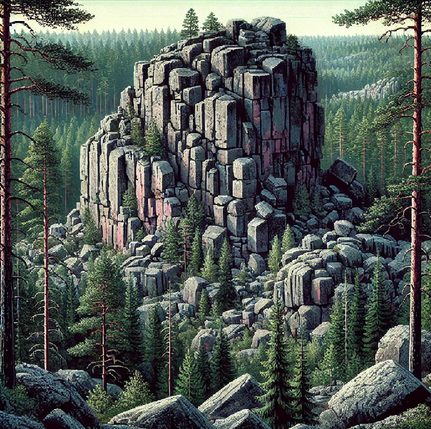
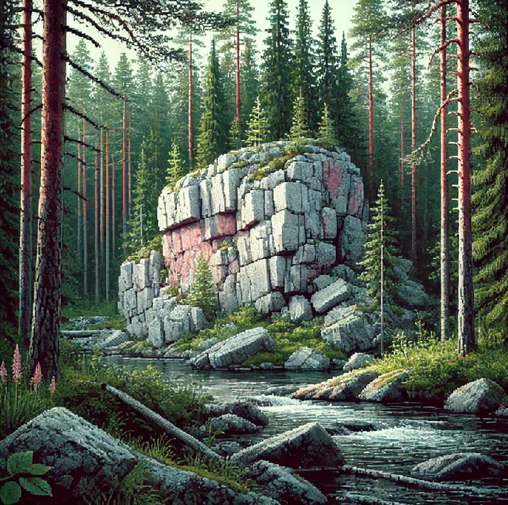
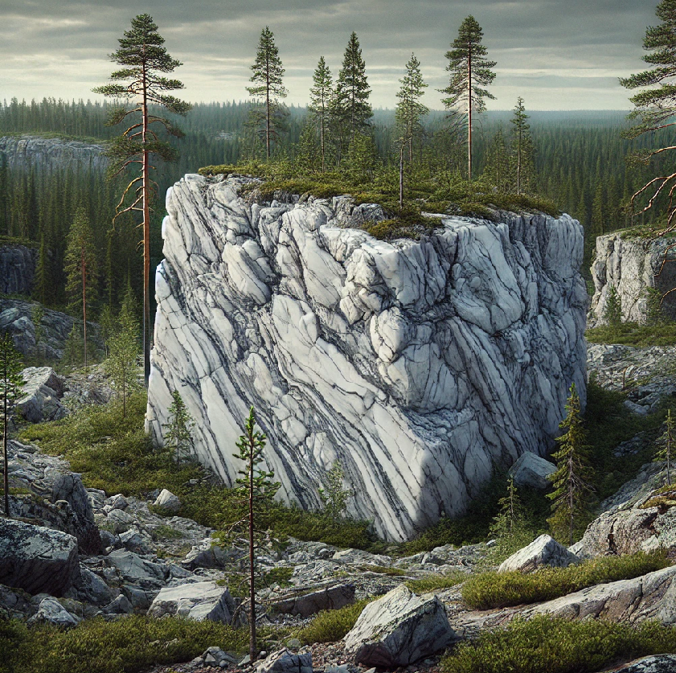
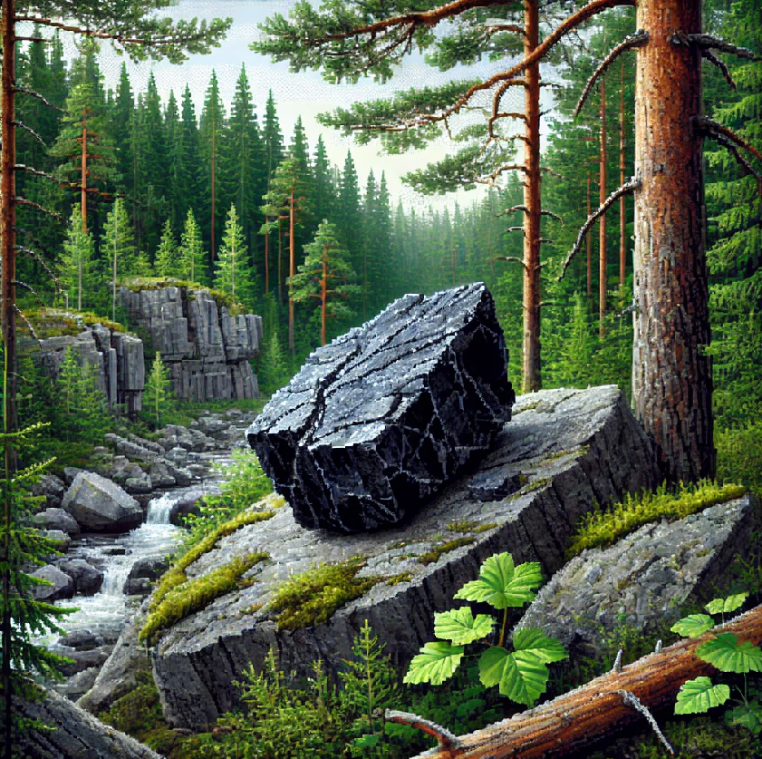

 |
ГранитГранит – самый распространенный камень в Карелии, бывает розовый, красный, серый, черный. Используется для строительства зданий, колонн, памятников, облицовки набережных, лестниц и даже мостовых – поскольку красивый, прочный и не боится мороза. Состоит из кварца, слюды и полевого шпата. В центре Петербурга едва ли удастся найти здание, памятник или набережную, где нет карельского гранита. Из него сотворен один из символов Санкт-Петербурга — атланты Эрмитажа он есть в Петергофе, Казанском соборе, Мраморном дворце, Михайловском замке, из него построены все набережные Нева в Санкт-Петербурге. |
|  |
КварцитМесторождение малинового кварцита находится вблизи карельского села Шокша. Свой знаменитый багряный цвет этот камень получил благодаря высокому содержанию железа. Горные мастера прозвали его шокшинским порфиром. Его использовали при строительстве и облицовке значимых государственных зданий — Исаакиевского и Казанского соборов, а также Зимнего дворца. Из этого камня сделана гробница Бонапарта, вершина пирамиды мавзолея Ленина, мемориал «Могила неизвестного солдата. |
|  |
МраморВ Карелии добывали колоссальное количество мрамора. В первую очередь для нужд Петербурга. Строящийся роскошный город нуждался в камне — долговечном, цветном, декоративном. Северная столица хотела отличаться от других городов и восхищать собой. Здесь добывали пять видов мрамора разных оттенков, от белого и светло-серого до темно-серого и почти черного. Его использовали на строительстве Исаакиевского собора, Мраморного дворца, Михайловского замка, Казанского собора, и других зданий. Им отделаны станции Ленинградского и Московского метро. |
|  |
ШунгитШунгитовое месторождение находится вблизи карельской деревни Шуньга. Шунгит блестит и по внешнему виду напоминает уголь, но в печи не горит. Шунгит в настоящее время используют для очистки воды, для изготовления автомобильных покрышек, в металлургии при производстве чугуна и ферросплавов, для производства сувениров, в строительстве. Полированные плиты из шунгита использовали при облицовке некоторых станций Московского метрополитена. |